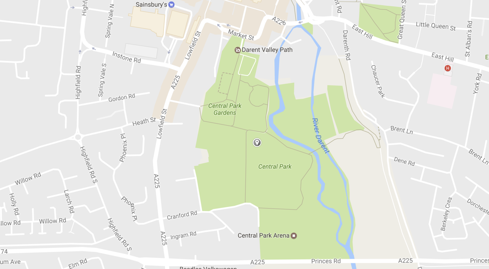
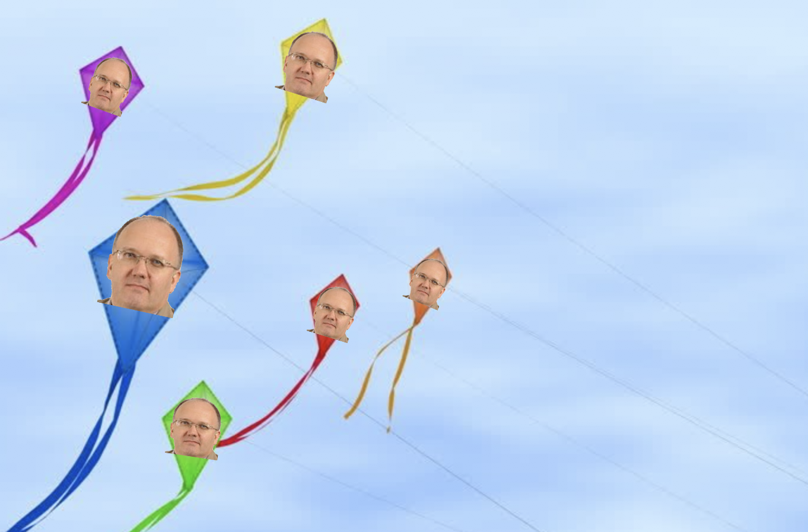

For one day only, we are offering families a free kite to celebrate the achievements of Dartford Council, and to also to go some way to address the rise in Council Tax that starts today!
Please bring your latest Council Tax bill, which we will stamp once you collect your free kite.

Come on down to Central Park and pick up your free DBC branded kite this morning before noon, and enjoy the park and all its glory, before they are overshadowed by houses in the next few years.
Your kite will soar higher than any other kite, and is made from the finest materials.
Show your appreciation for the Council and all their achievements, and fly your kite with pride!

Remember - you wouldn't get this at any other Council!